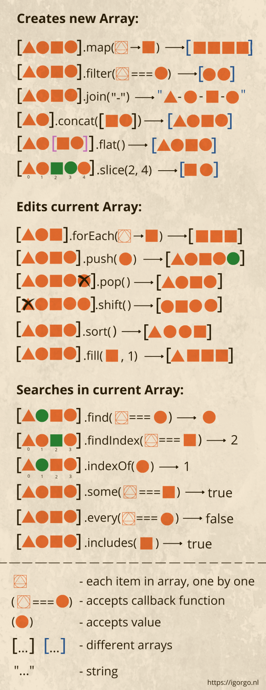

Цикличная обработка +
- Цикличные методы в стандарте ES2015 (ES6). Не мутируют исходные массивы, всегда возвращают новые массивы.
- В параметрах анономной функции всегда стоят (item, index, array)
- Результат можно сохранять в переменную
| Метод | Описание |
|---|---|
.map() + | мапинг |
.flatMap() + | плоский мапинг |
.filter() + | фильтрация |
.find() + | поиск элемента с начала |
.findLast() + | поиск элемента с конца |
.findIndex() + | поиск индекса с начала |
.findLastIndex() + | поиск индекса с конца |
.some() + | проверка элемента |
.every() + | проверка каждого элемента |
.sort() + | сортировка |
.toSorted() + | сортировка |
.reduce() | схлопывание |
.reduceRight() + | схлопывание справа |
.forEach() + | выполнение действий при итерациях |
.entries() / .keys() / .values() + | итераторы в цикле for |
.map()
- Применяется для обработки исходного массива
- Всегда возвращает обработанный массив
- Не изменяет исходный массив (не мутирует)
- 3 параметра: элемент, индекс, исходный массив
const a = [
{ id: 1, name: 'alpha', active: true },
{ id: 2, name: 'beta', active: false },
{ id: 3, name: 'gamma', active: true },
];
const b = a.map((item, index, arr) => {
return item.name;
});
// shortcut
const b = a.map(item => item.name);
b; // ['alpha', 'beta', 'gamma']
.map() с услов�ием
Пример использования с изменением значения полей.
const c = a.map((item, index) => {
if (item.name === 'alpha') {
return {
...item,
id: 0,
name: 'new alpha',
};
}
return item;
});
.flatMap()
- Когда нужно привести массив массивов в одномерный
const users = [
{ name: 'Ann', tags: ['js', 'react'] },
{ name: 'Bob', tags: ['node'] },
];
users.map(i => i.tags); // [ [ 'js', 'react' ], [ 'node' ] ] - многомерный массив
users.flatMap(i => i.tags); // [ 'js', 'react', 'node' ] - одномерный массив
.filter()
const a = [
{ id: 1, name: 'alpha', active: true },
{ id: 2, name: 'beta', active: false },
{ id: 3, name: 'gamma', active: true },
];
// в этой переменной будут элементы массива a с полем active === true
const b = a.filter(item => item.active); // [ { id: 1, name: 'alpha', active: true }, { id: 3, name: 'gamma', active: true } ]
.find()
- Возвращает элемент, а не массив
const a = [
{ id: 1, name: 'alpha', active: true },
{ id: 2, name: 'beta', active: false },
{ id: 3, name: 'gamma', active: true },
];
// вернёт первый попавшийся элемент с начала массива
const b = a.find(item => item.active); // { id: 1, name: 'alpha', active: true }
.findLast()
- Возвращает элемент, а не массив
const a = [
{ id: 1, name: 'alpha', active: true },
{ id: 2, name: 'beta', active: false },
{ id: 3, name: 'gamma', active: true },
];
// вернёт первый попавшийся элемент с конца массива
const b = a.findLast(item => item.active); // { id: 3, name: 'gamma', active: true }
.findIndex()
- Возвращает
indexпервого попавшего элемента с начала массива
const a = [
{ id: 1, name: 'alpha', active: true },
{ id: 2, name: 'beta', active: false },
{ id: 3, name: 'gamma', active: true },
];
// вернёт первый попавшийся индекс с начала массива
const b = a.findIndex(item => item.active); // 0
.findLastIndex()
- Возвращает
indexпервого попавшего элемента с конца массива
const a = [
{ id: 1, name: 'alpha', active: true },
{ id: 2, name: 'beta', active: false },
{ id: 3, name: 'gamma', active: true },
];
// вернёт первый попавшийся индекс с конца массива
const b = a.findLastIndex(item => item.active); // 2
.some()
- Возвращает
boolean
const a = [
{ id: 1, name: 'alpha', active: true },
{ id: 2, name: 'beta', active: false },
{ id: 3, name: 'gamma', active: true },
];
// проверяем один элемент на поле active === true
const b = a.some(item => item.active); // true
.every()
- Возвращает
boolean
const a = [
{ id: 1, name: 'alpha', active: true },
{ id: 2, name: 'beta', active: false },
{ id: 3, name: 'gamma', active: true },
];
// проверяем все элементы на поле active === true
const b = a.every(item => item.active); // false
sort()
- Мутирует исходный массив
- Два параметра в анонимной функции
sortFunc().a-currentitem,b-nextitem. - Сравниваться должны типы
number sortFunc()должна возвращать сравнение этихnumber, и должно вернуться число< 0,= 0или> 0.< 0-currentменьше чемnext= 0-current===next> 0-currentбольше чемnext
Сортировка чисел
const a = [11, 2, 22, 1];
const b = a.sort((a, b) => a - b); // [ 1, 2, 11, 22 ]
// полная запись
function compareFn(a, b) {
// a is less than b by some ordering criterion
if (a < b) {
return -1;
// a is greater than b by the ordering criterion
} else if (a > b) {
return 1;
}
// a must be equal to b
return 0;
}
const c = a.sort(compareFn); // [ 1, 2, 11, 22 ]
Cортировка строк
const a = ['Jack', 'Rose', 'Anna', 'Zoey', 'Peter', 'Bob'];
const b = a.sort((curr, next) => curr.localeCompare(next)); // [ 'Anna', 'Bob', 'Jack', 'Peter', 'Rose', 'Zoey' ]
Сортировка дат
Даты удобно сравнивать через new Date(valut).getTime() (миллисекунды).
const dates = [
new Date('2024-12-01'),
new Date('2023-05-10'),
new Date('2025-01-15'),
];
// по возрастанию (от старых к новым)
const asc = [...dates].sort((a, b) => a.getTime() - b.getTime());
// [ 2023-05-10, 2024-12-01, 2025-01-15 ]
// по убыванию (от новых к старым)
const desc = [...dates].sort((a, b) => b.getTime() - a.getTime());
// [ 2025-01-15, 2024-12-01, 2023-05-10 ]
Сортировка объектов по полю с датой (строка ISO или Date):
const events = [
{ id: 1, title: 'meetup', date: '2024-11-02' },
{ id: 2, title: 'release', date: '2024-03-18' },
{ id: 3, title: 'demo', date: '2025-01-09' },
];
// можно так короче (shortcut)
const sortedDates = [...events].sort(
(a, b) => new Date(a.date).getTime() - new Date(b.date).getTime(),
);
.toSorted()
- Возвращает новый отсортированный массив
- Не мутирует исходный (в отличие от
.sort()) - Сигнатура сравнения та же:
(a, b) => number
const a = [11, 2, 22, 1];
const b = a.toSorted((x, y) => x - y); // [1, 2, 11, 22]
a; // [11, 2, 22, 1] — исходный не изменился
// для сравнения: .sort() мутирует
const c = [11, 2, 22, 1];
c.sort((x, y) => x - y);
c; // [1, 2, 11, 22]
Строки и даты — так же, как у .sort():
const names = ['Jack', 'Rose', 'Anna'];
names.toSorted((curr, next) => curr.localeCompare(next)); // ['Anna', 'Jack', 'Rose']
const events = [
{ id: 1, title: 'meetup', date: '2024-11-02' },
{ id: 2, title: 'release', date: '2024-03-18' },
];
events.toSorted(
(a, b) => new Date(a.date).getTime() - new Date(b.date).getTime(),
);
// release → meetup; events без изменений
.reduce()
- Мощный метод для обработки и преобразования массивов.
- Анонимная функция содержит 4 параметра
(total / acc / preVal / currVal, item / nextVal, index, array) - Можно вводить дефолтное значение вторым параметром после функции
Суммирование чисел
const a = [11, 2, 22, 1];
// суммирование
const b1 = a.reduce((total, item) => (total = total + item), 0); // 36
const b2 = a.reduce((total, item) => (total = total + item), 10); // 46 (10 - стартовое значение)
const b3 = a.reduce((total, item) => (total += item)); // 36 - shortcut
// min значение
const min = a.reduce((total, item) => Math.min(total, item)); // 1
// max значение
const max = a.reduce((total, item) => Math.max(total, item)); // 22
Преобразование данных
const a = [
{ id: 1, name: 'alpha', active: true },
{ id: 2, name: 'beta', active: false },
{ id: 3, name: 'gamma', active: true },
];
const b = a.reduce(
(total, item) => {
total.ids.push(item.id);
total.names.push(item.name);
return total;
},
// начальная заготовка для total
{
ids: [],
names: [],
},
);
b; // { ids: [ 1, 2, 3 ], names: [ 'alpha', 'beta', 'gamma' ] }
Преобразование в объект
const b = a.reduce((total, item) => {
total[item.id] = item;
return total;
}, {});
b;
// {
// '1': { id: 1, name: 'alpha', active: true },
// '2': { id: 2, name: 'beta', active: false },
// '3': { id: 3, name: 'gamma', active: true }
// }
.reduceRight()
- То же, что
.reduce(), но обход идёт справа налево - Без начального значения первый
total— последний элемент массива
const a = [11, 2, 22, 1];
// обход: 1 → 22 → 2 → 11
const order = a.reduceRight((total, item) => {
total.push(item);
return total;
}, []);
order; // [1, 22, 2, 11]
// сумма от направления не зависит
const sum = a.reduceRight((total, item) => (total += item)); // 36
.forEach()
- Результат нельзя сохранять в переменную
- Работает часто в паре с отдельным пустым массивом
- Логирование, отладка
- Просто «пройтись и что-то сделать», результат массива не нужен
- .map() для данных, .forEach() для действий
const a = [
{ id: 1, name: 'alpha', active: true },
{ id: 2, name: 'beta', active: false },
{ id: 3, name: 'gamma', active: true },
];
// создаём пустой массивж
const b = [];
// пушим name в массив b на каждую итерацию
a.forEach((item, index, array) => {
b.push(item.name);
// логирование
if (index === 1) {
console.log(item.name);
}
// выполнение действия
if (item.name === 'gamma') {
localStorage.setItem(id, item.id);
}
});
b; // [ 'alpha', 'beta', 'gamma' ]
iterators
.keys() / .values() / .entries() — итераторы для цикла for...of.
const arr = ['a', 'b', 'c'];
// keys() — индексы
for (const i of arr.keys()) {
console.log(i); // 0, 1, 2
}
// values() — значения (по сути то же, что for...of по массиву)
for (const v of arr.values()) {
console.log(v); // 'a', 'b', 'c'
}
// entries() — пары [index, value]
for (const [i, v] of arr.entries()) {
console.log(i, v); // 0 'a', 1 'b', 2 'c'
}
Сразу можно преобразовать в другой массив:
const arr = ['a', 'b', 'c'];
[...arr.keys()]; // [0, 1, 2]
[...arr.values()]; // ['a', 'b', 'c']
[...arr.entries()]; // [[0, 'a'], [1, 'b'], [2, 'c']]
